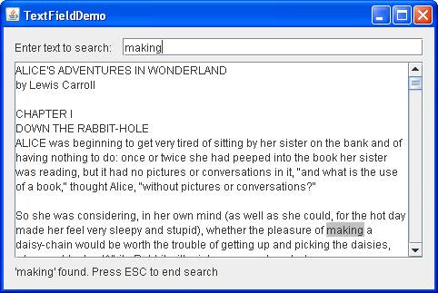

Lección: Usando Componentes Swing
Sección: Cómo Usar Varios Componentes
Cómo Usar Campos de Texto
Un campo de texto es un control de texto básico que habilita al suuario a introducir una pequeña cantidad de texto. Cuando el usuario indica que la entrada de texto está completa (usualmente presionando Intro), el campo de texto dispara un evento de acción. Si necesita obtener más de una línea de entrada del usuario, use un área de texto.
JTextField
|
Qué cubre esta sección: campos de texto básicos. |
JFormattedTextField |
Una subclase de JTextField que le permita especificar el conjunto legal de caracteres que
el usuario puede introducir. Vea
Cómo Usar Campos de Texto Formateado.
|
JPasswordField |
Una subclase de JTextField que no muestra los caracteres que el usuario teclea. Vea
Cómo Usar Campos de Contraseña.
|
JComboBox |
Puede ser editado, y suministra un menú de cadenas para elegir. Vea Cómo Usar Cuadros Combinados. |
JSpinner |
Combina un campo de texto formateado con un par de pequeños botones que habilitan al usuario a elegir el valor disponible anterior o siguiente . Vea Cómo Usar Contadores Numéricos. |
El ejemplo siguiente muestra un campo de texto básico y un área de texto. El campo de texto es editable. El área de texto no es editable. Cuando el usuario presiona Intro en el campo de texto, el programa copia el contenido del campo de texto en el área de texto, y entonces seleccona todo el texto en el campo de texto.

Pulse el botón Lanzar para ejecutar TextDemo usando Java™ Web Start ( descargue KDJ 7 o posterior). Alternativamente, para compilar y ejecutar usted mismo el ejemplo, consulte el índice de ejemplos.

Puede encontrar el código entero para este programa en
TextDemo.java. El código siguiente crea y configura el campo de texto:
textField = new JTextField(20);
El argumento entero pasado al constructor JTextField, 20 en el ejemplo,
indica el número de columnas del campo. Este número se usa junto con las métricas proporcionadas por la fuente
actual del campo para calcular el ancho preferido del campo. No hay límite al numero de caracteres que el
usuario puede introducir. Para hacer eso, puede o usar un
campo de texto formateado o un oyente de documento, como se describió en
Características del Componente de Texto.
Nota:
Le recomendamos que especifique el número de columnas para cada campo de texto. Si no especifica el número de columnas o un tamaño preferido, entonces el tamaño preferido del campo cambia cada vez que el texto cambia, lo que puede dar como resultado actualizaciones de diseño no deseadas.
La siguiente líne de código registra un objeto TextDemo como un oyente de acción para el campo de
texto.
textField.addActionListener(this);
El método actionPerformed maneja los eventso de acción para el campo de texto:
private final static String newline = "\n";
...
public void actionPerformed(ActionEvent evt) {
String text = textField.getText();
textArea.append(text + newline);
textField.selectAll();
}
Note que el uso del método getText de JTextField para recuperar el texto actualmente
contenido por el campo de texto. El texto devuelto por este método no incluye el carácter de salto de
línea para la tecla Intro que disparó el evento de acción.
Ha visto como un campo de texto básico se usa. Debido a que la clase JTextField
hereda de la clase JTextComponent, los campos de textos son muy flexibles y pueden ser
personalizados casi de cualquier forma que quiera. Por ejemplo, puede añadir un oyente de documento o un filtro
de documento para ser notificado cuando el texto cambia, y en el caso del filtro puede modificar el campo de
texto en consecuencia. La información sobre los componentes de texto se encuentra en
Características del Componente de Texto. Antes de personalizar un
JTextField, sin embargo, asegúrese que uno de los otros
componentes basados en los campo de texto no hará el trabajo por usted.
A menudo los campos de textos están emparejados con etiquetas que describen el campo de texto. Vea Ejemplos que Usan Campos de Texto para indicaciones sobre la creación de estos pares.
Otro Ejemplo: TextFieldDemo
El ejemplo TextFieldDemo presenta un campo de texto y un área de texto. Puede encontrar el código
entero para este programa en
TextFieldDemo.java.
Mientras usted teclea caracteres en el campo de texto el programa busca el texto teclado en el área de texto.
Si la entrada se encuentra es resaltada. Si el programa falla en encontrar la entrada entonces el fondo del
campo de texto se vuelve rosa. Una barra de estado debajo del área de texto muestra un mensaje si se encontró
el texto o no. La tecla Escape se usa para iniciar una nueva búsqueda o finalizar la actual. Aquí tiene una
imagene de la aplicación TextFieldDemo.

Pulse el botón Lanzar para ejecutar TextFieldDemo usando Java™ Web Start ( descargue KDJ 7 o posterior). Alternativamente, para compilar y ejecutar usted mismo el ejemplo, consulte el índice de ejemplos.
Para resaltar el texto, este ejemplo usa un resaltador y un pintor. El código de abajo crea y configura el resaltador y el pintor para el área de texto.
final Highlighter hilit;
final Highlighter.HighlightPainter painter;
...
hilit = new DefaultHighlighter();
painter = new DefaultHighlighter.DefaultHighlightPainter(HILIT_COLOR);
textArea.setHighlighter(hilit);
Este código agrega un oyente de documento al documento del campo de texto.
entry.getDocument().addDocumentListener(this);
Los métodos insertUpdate y removeUpdate del oyente del documento llaman al método
search, el cual no sólo realiza una búsqueda en el área de texto sino que también maneja el
resaltado. El código siguiente resalta el texto encontrado, establece el cursor al final de la coincidencia
encontrada, establece el fondo por defecto para el campo de texto, y muestra un mensaje en la barra de estado.
hilit.addHighlight(index, end, painter);
textArea.setCaretPosition(end);
entry.setBackground(entryBg);
message("'" + s + "' encontrado. Presione ESC para terminar la búsqueda");
La barra de estado es un objeto JLabel. El código de debajo muestra cómo el método
message es implementado.
private JLabel status;
...
void message(String msg) {
status.setText(msg);
}
Si no hay coincidencia en el área de texto, el código siguiente cambia el fondo del campo de texto a rosa y visualiza un mensaje de información adecuado.
entry.setBackground(ERROR_COLOR);
message("'" + s + "' no encontrado. Presione ESC para iniciar una nueva búsqueda");
La clase CancelAction es responsable de manejar la tecla Escape como sigue.
class CancelAction extends AbstractAction {
public void actionPerformed(ActionEvent ev) {
hilit.removeAllHighlights();
entry.setText("");
entry.setBackground(entryBg);
}
}
La IPA del Campo de Texto
La siguientes tablas listan los constructores y métodos usados habitualmente de JTextField. Otros
métodos que probablemente llame se definen en la clase JTextComponent. Consulte
La IPA del Componente de Texto.
Podría también invocar métodos en un campo de texto heredados de los otros ancestros del campo de texto, tales
como setPreferredSize, setForeground, setBackground,
setFont, y así. Vea La Clase JComponent para tablas de métodos
heredados de uso común.
La IPA para usar campos de texto cae en estas categorías:
- Establecer u Obtener los Contenidos de los Campos
- Ajuste Fino de la Apariencia del Campo
- Implementar la Funcionalidad de los Campos
| Método o Constructor | Propósito |
|---|---|
|
JTextField()
JTextField(String) JTextField(String, int) JTextField(int) |
Crea un campo de texto. Cuando está presente, el argumento int especifica el ancho deseado
en columnas. El argumento String contiene el texto inicial del campo.
|
|
void setText(String)
String getText() (definido en JTextComponent)
|
Establece u obtiene el texto mostrado por el campo de texto. |
| Método | Propósito |
|---|---|
|
void setEditable(boolean)
boolean isEditable() (definido en JTextComponent)
|
Establece o indica si el usuario puede editar el texto en el campo de texto. |
|
void setColumns(int);
int getColumns() |
Establece u obtiene el número de columnas mostrado por el campo de texto. Esto es solo una pista para calcular el ancho preferido del campo. |
|
void setHorizontalAlignment(int);
int getHorizontalAlignment() |
Establece u obtiene cómo el texto es alineado horizontalmente dentro de su área. Puede usar
JTextField.LEADING, JTextField.CENTER, y JTextField.TRAILING
como argumentos.
|
| Método | Propósito |
|---|---|
|
void addActionListener(ActionListener)
void removeActionListener(ActionListener) |
Agrega o elimina un oyente de acción. |
|
void selectAll()
(definido en JTextComponent)
|
Selecciona todos los caracteres en el campo de texto. |
Ejemplos Que Usan Campos de Texto
Esta tabla muestra algunos ejemplos que usan campos de texto y señala dónde se describen esos ejemplos. Para ejemplos de código que son similares entre todas las variedades de campo de textos, como el manejo del diseño, mire la lista de ejemplos de componentes relacionados tales como campos de texto formateados y Contadores Numéricos.
| Ejemplo | Dónde Se Describe | Notas |
|---|---|---|
| TextDemo | Esta sección | Una aplicación que usa un campo de texto básico con un oyente de acción. |
| TextFieldDemo | Esta sección | Una aplicación que usa un campo de texto y un área de texto. Se hace una búsqueda en el área de texto para encontrar una entrada del campo de texto. |
| DialogDemo | Cómo Hacer Diálogos |
CustomDialog.java incluye un campo de texto cuyo valor es comprobado. Pude mostrar el
diálogo pulsando la pestaña Más Diálogos, seleccionar la opción del diálogo Validación de la entrada,
y entonces pulsar el botón ¡Muéstralo!.
|
| TextSamplerDemo | Usando Componentes de Texto |
Presenta pares de etiqueta-campo de texto usando un GridBagLayout y un método de
convenencia:
addLabelTextRows(JLabel[] labels,
JTextField[] textFields,
GridBagLayout gridbag,
Container container)
|
| TextInputDemo | Cómo Usar Campos de Texto Formateados |
Presenta pares de etiqueta-campo de texto usando un SpringLayout y el método de
conveniencia SpringUtilities:
makeCompactGrid(Container parent,
int rows, int cols,
int initialX, int initialY,
int xPad, int yPad)
|
Si está programando en JavaFX, vea Campo de Texto.